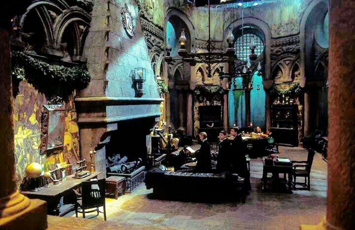
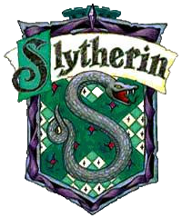
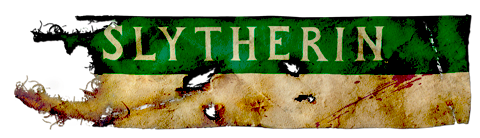

Ambitious Slytherin
"Or perhaps in Slytherin,
You'll make your real friends,
Those cunning folk use any means,
To achieve their ends."
- The Sorting Hat

Slytherin Common Room

On Hunting with the Snakes
Slytherin is one of the four Houses at Hogwarts School of Witchcraft and Wizardry.
Founded by Salazar Slytherin, the house is composed mostly of pure-blood students,
due to its founder's mistrust of Muggle-borns. The house is traditionally home to
students who exhibit such traits as cunning, resourcefulness, and ambition.
Its emblematic animal is a snake and its colours are green and silver.
The house ghost is the Bloody Baron.
